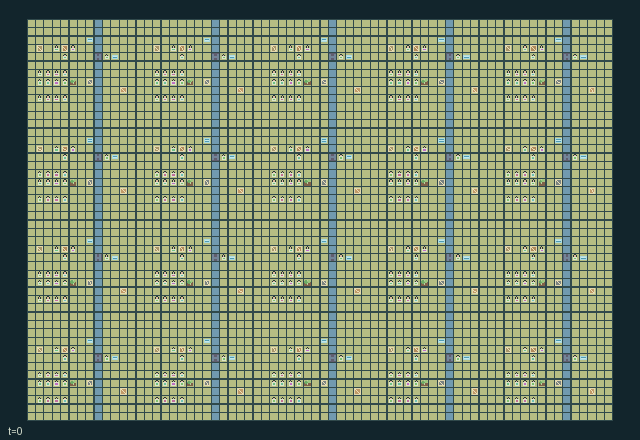

GI242 · Estuary Council Cities

Deliver 40 town crop cargos to markets while negotiating physical permits, river access, irrigation and delayed flood protection before H=1024.
Identity and original contract
320 independently actionable roles; 21 discrete commands per role; 833 native observation columns per role; original horizon 1024 steps. Declared per-step reward range: -8.0 to 8.0. Observation regime: partially_observable.
Source SHA-256: f0c6cf463d29edd7e5870f6c15c590ca922820e224adf38026aef485afe7b7c7
The objective, rewards, population, map and horizon remain original. A preview is not a success claim.
Objective and gameplay
Deliver 40 town crop cargos to markets while negotiating physical permits, river access, irrigation and delayed flood protection before H=1024.
Two distinct local contributors within four ticks and a civic witness create a carried permit. Permits compete between gate access and water allocation. Upstream levees redirect a later flood pulse into downstream towns. Open sluices aid access and irrigation but admit floodwater. Ferries, roads and markets alter future cargo choices.
- Twenty towns each contain sixteen independently controlled residents. Tools are exchangeable and original professions remain visible.
- Two different residents must contribute supply at the same assembly within four ticks; a seal-holder must witness before a permit appears.
- Carry a permit to open a river sluice for twelve ticks, or spend it at a reservoir for four irrigation units.
- Levees protect local fields but redirect later flood pressure to the neighboring town downstream. Sluices improve access and can increase exposure.
- Plant, irrigate and harvest actual fields. Carry crops to markets, invest in markets or build roads for cheaper movement.
- Ferries cross the actual river to a free landing. Native action rows can support human selection; the interface is not yet verified.
Ending: Natural completion at 40 cumulative market deliveries; otherwise horizon truncation at 1024.
What this game explores
Information, sensing & communication: Who knows a fact, when it was measured, and whether it was communicated are separate state variables. Test memory or communication using only the same role-visible evidence.
Resource commons & externalities: An action changes a persistent resource or burden that another role also encounters. Compare extraction with maintenance and record the downstream resource trajectory.
Commitment, exchange & governance: Promises consume time, liquidity, access or material. Separate an announced agreement from a binding commitment and from its eventual delivery; log cancellation and expiry too.
Complementary production & service: A useful outcome requires ordered stages, scarce equipment or another role's capability. Measure real completed products and resource circulation rather than counting intermediate actions as success.
Joint transport & shared access: Positions, load geometry, occupancy and persistent access constrain whose action can succeed next. Distinguish physical handoff, shared controls and simultaneous force from a cosmetic cooperation label.
These are questions supported by rule structure, not observed learning effects.
Play it: operating walkthrough
crucibles play --game gi242Keep Python running and open its printed address. Select this game, set a seed and press Create session. The game itself is always English.
Assign a role range to Host with Assign / take over, or Assign all roles. Invite a second participant with Create player invitation, then assign a disjoint subset. Every original role is available.
For every owned role choose a legal command and press Queue. Arrow keys / WASD queue a declared directional action for the current role camera when available. Space or Advance one joint step advances everyone together. Non-directional games use the selectors.
Unqueued roles use the labelled untrained uniform-legal policy. Take over or release roles before the next step without resetting. Full-state debug is privileged and permanently logged; role cameras preserve permissions. Close the session to retain logs. Server restart does not restore sessions.
Complete command reference
IDs and English labels exactly match the manifest. Availability depends on role, resources, location and phase. An available action can still have no productive effect.
0·Rest
1·East
2·West
3·South
4·North
5·Take two supply units
6·Contribute supply at assembly
7·Witness assembly with civic seal
8·Pick up granted permit
9·Spend permit to open sluice
10·Spend permit on reservoir allocation
11·Build levee at flood gauge
12·Ferry across river
13·Irrigate field
14·Plant with supply unit
15·Harvest ripe field
16·Sell crop at market
17·Lay road underfoot
18·Invest supply in market
19·Exchange tools
20·Handoff cargo and message
Roles and capability identifiers
These original role names describe capabilities, not interchangeable skins. Check each owned role's legal selector before planning handoffs.
agent_0·builder of town 0
agent_1·farmer of town 0
agent_2·steward of town 0
agent_3·ferryman of town 0
agent_4·courier of town 0
agent_5·trader of town 0
agent_6·engineer of town 0
agent_7·gate keeper of town 0
agent_8·builder of town 0
agent_9·farmer of town 0
agent_10·steward of town 0
agent_11·ferryman of town 0
agent_12·courier of town 0
agent_13·trader of town 0
agent_14·engineer of town 0
agent_15·gate keeper of town 0
agent_16·builder of town 1
agent_17·farmer of town 1
agent_18·steward of town 1
agent_19·ferryman of town 1
agent_20·courier of town 1
agent_21·trader of town 1
agent_22·engineer of town 1
agent_23·gate keeper of town 1
agent_24·builder of town 1
agent_25·farmer of town 1
agent_26·steward of town 1
agent_27·ferryman of town 1
agent_28·courier of town 1
agent_29·trader of town 1
agent_30·engineer of town 1
agent_31·gate keeper of town 1
agent_32·builder of town 2
agent_33·farmer of town 2
agent_34·steward of town 2
agent_35·ferryman of town 2
agent_36·courier of town 2
agent_37·trader of town 2
agent_38·engineer of town 2
agent_39·gate keeper of town 2
agent_40·builder of town 2
agent_41·farmer of town 2
agent_42·steward of town 2
agent_43·ferryman of town 2
agent_44·courier of town 2
agent_45·trader of town 2
agent_46·engineer of town 2
agent_47·gate keeper of town 2
agent_48·builder of town 3
agent_49·farmer of town 3
agent_50·steward of town 3
agent_51·ferryman of town 3
agent_52·courier of town 3
agent_53·trader of town 3
agent_54·engineer of town 3
agent_55·gate keeper of town 3
agent_56·builder of town 3
agent_57·farmer of town 3
agent_58·steward of town 3
agent_59·ferryman of town 3
agent_60·courier of town 3
agent_61·trader of town 3
agent_62·engineer of town 3
agent_63·gate keeper of town 3
agent_64·builder of town 4
agent_65·farmer of town 4
agent_66·steward of town 4
agent_67·ferryman of town 4
agent_68·courier of town 4
agent_69·trader of town 4
agent_70·engineer of town 4
agent_71·gate keeper of town 4
agent_72·builder of town 4
agent_73·farmer of town 4
agent_74·steward of town 4
agent_75·ferryman of town 4
agent_76·courier of town 4
agent_77·trader of town 4
agent_78·engineer of town 4
agent_79·gate keeper of town 4
agent_80·builder of town 5
agent_81·farmer of town 5
agent_82·steward of town 5
agent_83·ferryman of town 5
agent_84·courier of town 5
agent_85·trader of town 5
agent_86·engineer of town 5
agent_87·gate keeper of town 5
agent_88·builder of town 5
agent_89·farmer of town 5
agent_90·steward of town 5
agent_91·ferryman of town 5
agent_92·courier of town 5
agent_93·trader of town 5
agent_94·engineer of town 5
agent_95·gate keeper of town 5
agent_96·builder of town 6
agent_97·farmer of town 6
agent_98·steward of town 6
agent_99·ferryman of town 6
agent_100·courier of town 6
agent_101·trader of town 6
agent_102·engineer of town 6
agent_103·gate keeper of town 6
agent_104·builder of town 6
agent_105·farmer of town 6
agent_106·steward of town 6
agent_107·ferryman of town 6
agent_108·courier of town 6
agent_109·trader of town 6
agent_110·engineer of town 6
agent_111·gate keeper of town 6
agent_112·builder of town 7
agent_113·farmer of town 7
agent_114·steward of town 7
agent_115·ferryman of town 7
agent_116·courier of town 7
agent_117·trader of town 7
agent_118·engineer of town 7
agent_119·gate keeper of town 7
agent_120·builder of town 7
agent_121·farmer of town 7
agent_122·steward of town 7
agent_123·ferryman of town 7
agent_124·courier of town 7
agent_125·trader of town 7
agent_126·engineer of town 7
agent_127·gate keeper of town 7
agent_128·builder of town 8
agent_129·farmer of town 8
agent_130·steward of town 8
agent_131·ferryman of town 8
agent_132·courier of town 8
agent_133·trader of town 8
agent_134·engineer of town 8
agent_135·gate keeper of town 8
agent_136·builder of town 8
agent_137·farmer of town 8
agent_138·steward of town 8
agent_139·ferryman of town 8
agent_140·courier of town 8
agent_141·trader of town 8
agent_142·engineer of town 8
agent_143·gate keeper of town 8
agent_144·builder of town 9
agent_145·farmer of town 9
agent_146·steward of town 9
agent_147·ferryman of town 9
agent_148·courier of town 9
agent_149·trader of town 9
agent_150·engineer of town 9
agent_151·gate keeper of town 9
agent_152·builder of town 9
agent_153·farmer of town 9
agent_154·steward of town 9
agent_155·ferryman of town 9
agent_156·courier of town 9
agent_157·trader of town 9
agent_158·engineer of town 9
agent_159·gate keeper of town 9
agent_160·builder of town 10
agent_161·farmer of town 10
agent_162·steward of town 10
agent_163·ferryman of town 10
agent_164·courier of town 10
agent_165·trader of town 10
agent_166·engineer of town 10
agent_167·gate keeper of town 10
agent_168·builder of town 10
agent_169·farmer of town 10
agent_170·steward of town 10
agent_171·ferryman of town 10
agent_172·courier of town 10
agent_173·trader of town 10
agent_174·engineer of town 10
agent_175·gate keeper of town 10
agent_176·builder of town 11
agent_177·farmer of town 11
agent_178·steward of town 11
agent_179·ferryman of town 11
agent_180·courier of town 11
agent_181·trader of town 11
agent_182·engineer of town 11
agent_183·gate keeper of town 11
agent_184·builder of town 11
agent_185·farmer of town 11
agent_186·steward of town 11
agent_187·ferryman of town 11
agent_188·courier of town 11
agent_189·trader of town 11
agent_190·engineer of town 11
agent_191·gate keeper of town 11
agent_192·builder of town 12
agent_193·farmer of town 12
agent_194·steward of town 12
agent_195·ferryman of town 12
agent_196·courier of town 12
agent_197·trader of town 12
agent_198·engineer of town 12
agent_199·gate keeper of town 12
agent_200·builder of town 12
agent_201·farmer of town 12
agent_202·steward of town 12
agent_203·ferryman of town 12
agent_204·courier of town 12
agent_205·trader of town 12
agent_206·engineer of town 12
agent_207·gate keeper of town 12
agent_208·builder of town 13
agent_209·farmer of town 13
agent_210·steward of town 13
agent_211·ferryman of town 13
agent_212·courier of town 13
agent_213·trader of town 13
agent_214·engineer of town 13
agent_215·gate keeper of town 13
agent_216·builder of town 13
agent_217·farmer of town 13
agent_218·steward of town 13
agent_219·ferryman of town 13
agent_220·courier of town 13
agent_221·trader of town 13
agent_222·engineer of town 13
agent_223·gate keeper of town 13
agent_224·builder of town 14
agent_225·farmer of town 14
agent_226·steward of town 14
agent_227·ferryman of town 14
agent_228·courier of town 14
agent_229·trader of town 14
agent_230·engineer of town 14
agent_231·gate keeper of town 14
agent_232·builder of town 14
agent_233·farmer of town 14
agent_234·steward of town 14
agent_235·ferryman of town 14
agent_236·courier of town 14
agent_237·trader of town 14
agent_238·engineer of town 14
agent_239·gate keeper of town 14
agent_240·builder of town 15
agent_241·farmer of town 15
agent_242·steward of town 15
agent_243·ferryman of town 15
agent_244·courier of town 15
agent_245·trader of town 15
agent_246·engineer of town 15
agent_247·gate keeper of town 15
agent_248·builder of town 15
agent_249·farmer of town 15
agent_250·steward of town 15
agent_251·ferryman of town 15
agent_252·courier of town 15
agent_253·trader of town 15
agent_254·engineer of town 15
agent_255·gate keeper of town 15
agent_256·builder of town 16
agent_257·farmer of town 16
agent_258·steward of town 16
agent_259·ferryman of town 16
agent_260·courier of town 16
agent_261·trader of town 16
agent_262·engineer of town 16
agent_263·gate keeper of town 16
agent_264·builder of town 16
agent_265·farmer of town 16
agent_266·steward of town 16
agent_267·ferryman of town 16
agent_268·courier of town 16
agent_269·trader of town 16
agent_270·engineer of town 16
agent_271·gate keeper of town 16
agent_272·builder of town 17
agent_273·farmer of town 17
agent_274·steward of town 17
agent_275·ferryman of town 17
agent_276·courier of town 17
agent_277·trader of town 17
agent_278·engineer of town 17
agent_279·gate keeper of town 17
agent_280·builder of town 17
agent_281·farmer of town 17
agent_282·steward of town 17
agent_283·ferryman of town 17
agent_284·courier of town 17
agent_285·trader of town 17
agent_286·engineer of town 17
agent_287·gate keeper of town 17
agent_288·builder of town 18
agent_289·farmer of town 18
agent_290·steward of town 18
agent_291·ferryman of town 18
agent_292·courier of town 18
agent_293·trader of town 18
agent_294·engineer of town 18
agent_295·gate keeper of town 18
agent_296·builder of town 18
agent_297·farmer of town 18
agent_298·steward of town 18
agent_299·ferryman of town 18
agent_300·courier of town 18
agent_301·trader of town 18
agent_302·engineer of town 18
agent_303·gate keeper of town 18
agent_304·builder of town 19
agent_305·farmer of town 19
agent_306·steward of town 19
agent_307·ferryman of town 19
agent_308·courier of town 19
agent_309·trader of town 19
agent_310·engineer of town 19
agent_311·gate keeper of town 19
agent_312·builder of town 19
agent_313·farmer of town 19
agent_314·steward of town 19
agent_315·ferryman of town 19
agent_316·courier of town 19
agent_317·trader of town 19
agent_318·engineer of town 19
agent_319·gate keeper of town 19
Information and observation permissions
Only own prefix and radius-two Chebyshev 5x5 patch with exact listed channels enter the policy. Visible actor identity, role, crew, tools, cargo, stamina and message are in the patch. Each object attribute is in its group channels. Hidden cells and entities remain hidden; global debugger must be labeled. Clock alone is public.
The GIF is full-state debug and may reveal hidden entities or private state. Train on obs[agent], not the picture, state tree or another role's private row. Field slices and visibility are in the original manifest.
Reinforcement-learning integration
import jax
from crucibles_jaxmarl import make
env = make("gi242")
key = jax.random.PRNGKey(0)
key, rk, ak, sk = jax.random.split(key, 4)
obs, state = jax.jit(env.reset)(rk)
actions = env.sample_actions(ak, state)
obs, state, rewards, dones, info = jax.jit(env.step_env)(sk, state, actions)
done = dones["__all__"]Observations are float32 vectors of width 833; actions are scalar int32; masks have 21 entries. Supply all 320 roles each transition. Masked sampling is an engineering reference, not a trained learner.
step_env retains terminal data without reset. step performs outer autoreset and keeps terminal data in info["raw_state"] and info["raw_observation"]. Use dones["__all__"] for episode boundaries; separate completion, failure and time limit in analysis.
JIT or vmap equal identities and shapes. Split independent reset, policy and transition keys. Group different shapes explicitly; do not shrink the population or horizon. Host rendering stays outside training.
Training questions and fair evaluation
Define valid completion from the objective before fitting. Preserve original rewards and also report real deliveries/services, losses, resource state, unresolved episodes and per-role returns. Animation is not a reward signal.
Who knows a fact, when it was measured, and whether it was communicated are separate state variables. Test memory or communication using only the same role-visible evidence.
An action changes a persistent resource or burden that another role also encounters. Compare extraction with maintenance and record the downstream resource trajectory.
Promises consume time, liquidity, access or material. Separate an announced agreement from a binding commitment and from its eventual delivery; log cancellation and expiry too.
A useful outcome requires ordered stages, scarce equipment or another role's capability. Measure real completed products and resource circulation rather than counting intermediate actions as success.
Positions, load geometry, occupancy and persistent access constrain whose action can succeed next. Distinguish physical handoff, shared controls and simultaneous force from a cosmetic cooperation label.
Compare memory, communication or centralized critics under matched actor information. Declare critic access; keep actor inputs role-filtered. Match partner/opponent distributions, masks, compute and checkpoint selection. Final tests never enter fitting or selection.
Independent training runs or source-pairing blocks are inferential units; episodes from one policy are not independent training replications. Save hashes, keys, versions, device, time and cost. Negative, zero, failed and indeterminate outcomes are valid. No trained checkpoint or target score is supplied.
Classification and evidence
Overlapping editorial labels are reading aids, not proof of novelty, difficulty, strategic equivalence or learning effects.
- Information, sensing & communication
- Evidence
manifest.task.observation_access: Only own prefix and radius-two Chebyshev 5x5 patch with exact listed channels enter the policy. Visible actor identity, role, crew, tools, cargo, stamina and message are in the patch. Each object attribute is in its group channels. Hidden cells and entities remain hidden; global debugger must be labeled. Clock alone is public.
- Evidence
manifest.actions.20: Handoff cargo and message
- Resource commons & externalities
- Evidence
manifest.task.objective: Deliver 40 town crop cargos to markets while negotiating physical permits, river access, irrigation and delayed flood protection before H=1024.
- Evidence
manifest.task.interaction: Two distinct local contributors within four ticks and a civic witness create a carried permit. Permits compete between gate access and water allocation. Upstream levees redirect a later flood pulse into downstream towns. Open sluices aid access and irrigation but admit floodwater. Ferries, roads and markets alter future cargo choices.
- Evidence
manifest.actions.13: Irrigate field
- Commitment, exchange & governance
- Evidence
manifest.task.objective: Deliver 40 town crop cargos to markets while negotiating physical permits, river access, irrigation and delayed flood protection before H=1024.
- Evidence
manifest.task.interaction: Two distinct local contributors within four ticks and a civic witness create a carried permit. Permits compete between gate access and water allocation. Upstream levees redirect a later flood pulse into downstream towns. Open sluices aid access and irrigation but admit floodwater. Ferries, roads and markets alter future cargo choices.
- Evidence
manifest.actions.7: Witness assembly with civic seal
- Complementary production & service
- Evidence
manifest.actions.6: Contribute supply at assembly
- Evidence
manifest.actions.7: Witness assembly with civic seal
- Evidence
scene.rules.1: Two different residents must contribute supply at the same assembly within four ticks; a seal-holder must witness before a permit appears.
- Joint transport & shared access
- Evidence
manifest.task.objective: Deliver 40 town crop cargos to markets while negotiating physical permits, river access, irrigation and delayed flood protection before H=1024.
- Evidence
manifest.task.interaction: Two distinct local contributors within four ticks and a civic witness create a carried permit. Permits compete between gate access and water allocation. Upstream levees redirect a later flood pulse into downstream towns. Open sluices aid access and irrigation but admit floodwater. Ferries, roads and markets alter future cargo choices.
- Evidence
manifest.task.observation_access: Only own prefix and radius-two Chebyshev 5x5 patch with exact listed channels enter the policy. Visible actor identity, role, crew, tools, cargo, stamina and message are in the patch. Each object attribute is in its group channels. Hidden cells and entities remain hidden; global debugger must be labeled. Clock alone is public.
Source, receipts and preview limits
The world-only English GIF replays saved untrained legal actions through the original kernel. At most 25 actual endpoints include initial and terminal state; no invented interpolation. It is full-state debug, not the role observation.
Original source, observation slices, manifest and mechanism
Native receipt · Presentation receipt
Engineering passes do not establish learning. Nonzero floating differences remain recorded and undetermined; no new tolerance was introduced. Human scores remain unverified.